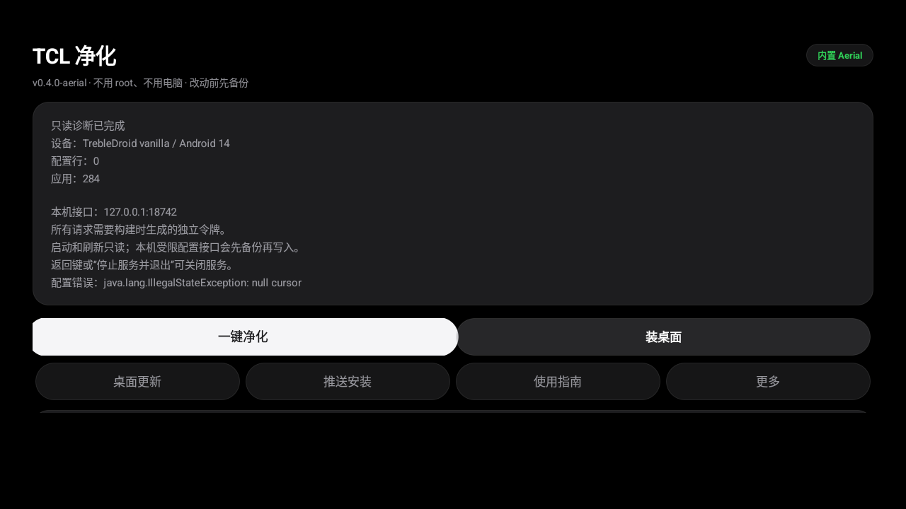
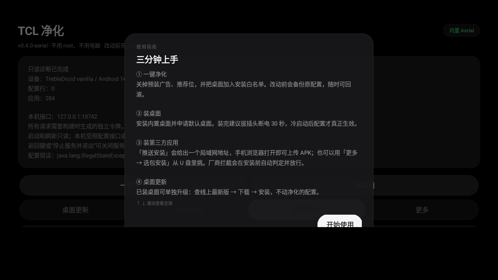

TCL 和雷鸟电视会拦掉第三方桌面，也会拦掉你从 U 盘装的软件。 这个工具把这些限制绕开 —— 顺便把开机就跳出来的广告和推荐位一起关掉。
这工具只对 MT9655 / MT9653 平台的 TCL、雷鸟新电视有效。 别的品牌、老机型都装不了，或者装了没反应 —— 先对一下再下载。
两个办法，任选其一：
① 电视上装一个「电视 ADB」类小工具（应用商店里搜 ADB），打开后在它的命令行里输入上面两条。
② 更省事：直接装通用版试试。装好后打开，它会把你的电视型号、能不能用，直接写在第一屏的诊断卡片里 —— 一看就知道，不合适就卸载，不会留下任何改动。
功能一模一样，区别只是内置了哪套桌面。 已经装好桌面的人选「通用版」，还没装的随便挑一个喜欢的。 以后想换桌面，直接装另一个覆盖上去就行，不用先卸载。
没有设置项要调，没有账号要登录。装好之后，一个按钮会把「放行 → 装桌面 → 设为默认」连着做完。
下载的包拷进 U 盘插到电视，用电视上的「文件管理」点开安装。第一次会问「允许安装未知应用」，选允许。
打开应用，遥控器选中这个按钮按确定。它会自动做完三件事：放行、装桌面、弹框问你要不要设为默认桌面 —— 选「确定」。
去广告是开机那一刻生效的，所以必须断电重启一次。之后每次开机就是干净桌面了。


内置的桌面是打包时的那一版，之后上游发了新版，不用重新下载整个安装包：进应用点 桌面更新，它会查出线上最新版、下载、然后用同一个「自带安装会话」装上去，净化配置一点不动。 CleanYourTV 上游只发源码不发 APK，这里用的是我们自己代构建的发行版；Aerial 直接取上游 Release。
按一下遥控器的 Home 键 就回到新桌面了。这是电视固件的固定行为 —— 开机时会强行拉起一次厂商桌面，工具改不掉它，只能按一下。
九成是因为没断电重启。去广告是在开机那一刻由系统组件执行的，不拔插头就一直不生效。
还是不行就回应用点一下「一键净化」，再拔插头 30 秒。仍然不行，点「刷新诊断」看看配置有没有写进去。
不用 root，不刷机，不改系统分区，也不影响保修 —— 它只是通过电视自己开放的配置接口改了几项设置，跟你用遥控器改设置是同一类操作。
最坏情况是某个应用打不开，恢复出厂设置就回到原样（配置会一并回到默认值）。
删不掉，但能彻底禁用 —— 桌面上看不见、后台不运行、也不占内存，效果和删了差不多。它们在只读分区里，厂商没给卸载白名单，任何工具都真删不了。
用「推送安装」：电视上点它，屏幕会显示一个类似 http://192.168.1.20:18743 的地址。手机连同一个 WiFi，浏览器打开这个地址，选 APK 传上去，电视上就会出现在列表里。
那个网页只能收文件，不能安装、不能改设置，所以不需要密码。装不装最后还是你在电视前点。
因为安卓不允许普通应用静默安装，这一步绕不过去，也故意不绕。工具负责的是把厂商多加的那道拦截撤掉，最后一下永远由你确认。
① 它真的会写系统配置，所以请只在自己的电视上用。
② 恢复出厂不会回滚电视的系统版本；系统升级（OTA）之后策略可能变严，升级完重新点一次「刷新诊断」。
③ 它只负责绕过厂商对安装来源的限制 —— 不破解会员、不解锁付费内容，那些不做，也没打算做。